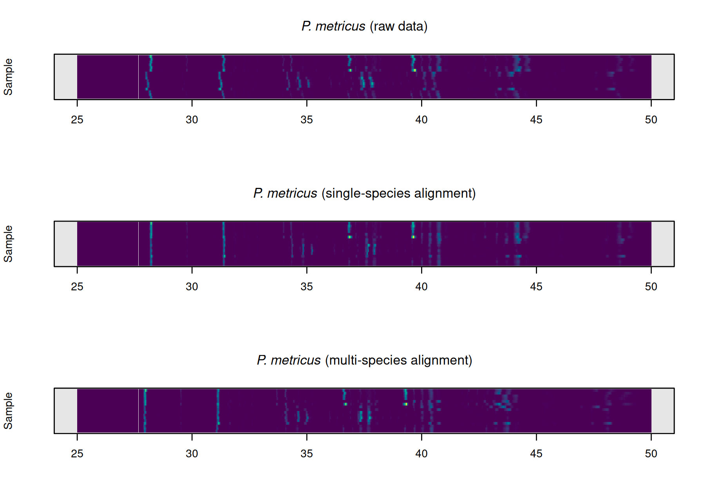
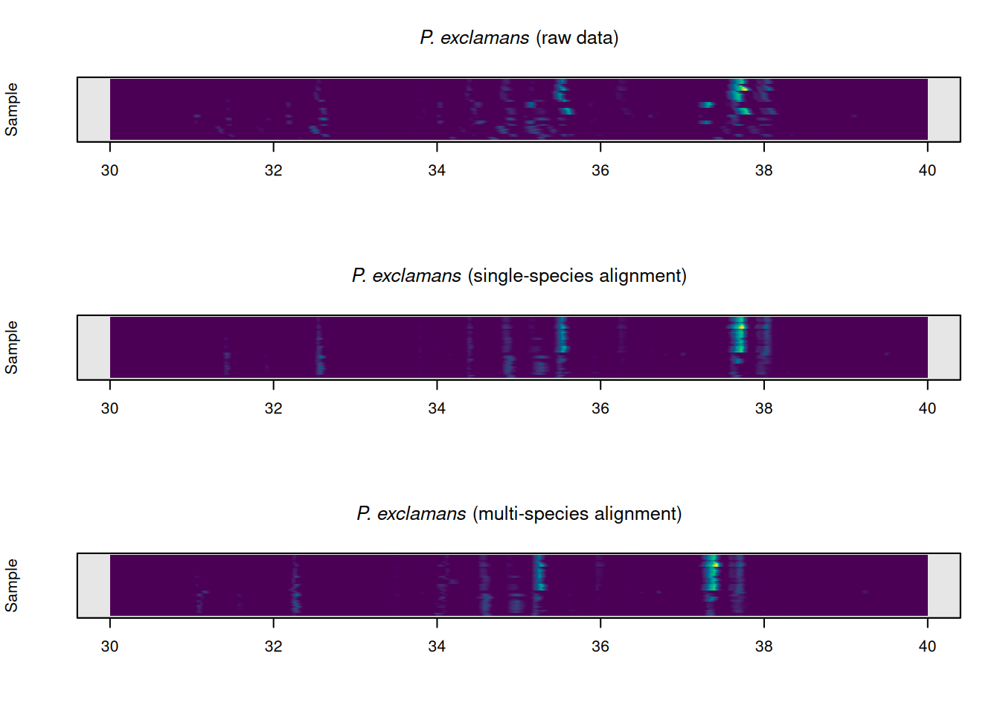

Introduction
While the basic workflow is similar for analyzing different types of chromatographic data with chromatographR, there are a few important differences when analyzing GC-FID data (or other 1-dimensional data). This vignette highlights some important considerations when using chromatographR to analyze GC-FID data (or other 2D chromatography data).
To demonstrate the use of chromatographR for the analysis GC-FID data, we will analyze a dataset on cuticular hydrocarbons (CHCs) composition in four species of paper wasps (Polistes spp.) collected by Dr. Andrew Legan [@legan2022; @legan2022a]. The dataset includes CHCs collected from Polistes dominula (european paper wasp), Polistes exclamans (common paper wasp), P. fuscatus (northern paper wasp), and P. metricus (metric paper wasp). As in other social insects, cuticular hydrocarbons serve as chemical cues mediating a number of social behaviors in paper wasps [@legan2021], including nestmate recognition [@gamboa1986; @gamboa1996; @bruschini2011], establishment of social hierarchies [@jandt2014] and mate choice [@reed1990].
# load chromatograms from Legan et al 2022
files <- rdryad::dryad_download("10.5061/dryad.wpzgmsbr8")[[1]]
chrom_paths <- grep("README|METADATA|ANNOTATED", files, invert = TRUE,
value = TRUE)
dat <- read_chroms(chrom_paths, format_in = "shimadzu_fid")
# load metadata
path_to_metadata <- grep("METADATA", files, value = TRUE)
meta <- read.csv(path_to_metadata, sep = "\t")In order to get a good alignment, it is helpful to remove the solvent peak. To accomplish this, we can use the preprocess function to remove the first four minutes of the chromatogram. We also reduce the time-axis resolution to .005 minutes since it drastically reduces computation time while seemingly having little effect on the accuracy of the integration results.
dat.pr <- preprocess(dat, spec.smooth = FALSE, dim1 = seq(4, 59.9, .005), cl = 1)We can then group the chromatograms by species for further analysis.
We can extract the peaks from the alkane ladder using the get_peaks function and plot the integrated peak areas. To eliminate small peaks that are not part of the alkane ladder, we use the filter_peaks function to remove features that do not have an amplitude of at least 10^4 response units.
ladder <- grep("LADDER", names(dat.pr))
pks <- get_peaks(dat.pr[ladder], time.units = "s")
plot(pks, chrom_list = dat.pr[ladder])
pks_f <- filter_peaks(pks, min_height = 10000)In this case, we also have integration results from ‘Shimadzu LabSolutions’, so we can check the integration results provided by chromatographR against the results from LabSolutions.
# check equality of retention times
# all.equal(alkanes$RT[-1],pks_f$ALKANE_LADDER$Intensity$rt)
par(mfrow=c(1,2))
plot(pks_f$ALKANE_LADDER$Intensity$area ~ alkanes$Area[-1], pch = 20,
xlab = "Area (LabSolutions)", ylab = "Area (chromatographR)",
main = "Area")
m <- lm(pks_f$ALKANE_LADDER$Intensity$area ~ alkanes$Area[-1])
abline(m)
legend("bottomright", bty = "n",
legend = bquote(R^2 == .(format(summary(m)$adj.r.squared, digits = 4))))
plot(pks_f$ALKANE_LADDER$Intensity$height ~ alkanes$Height[-1], pch = 20,
xlab = "Area (LabSolutions)", ylab = "Area (chromatographR)",
main = "Height")
m <- lm(pks_f$ALKANE_LADDER$Intensity$height ~ alkanes$Height[-1])
abline(m)
legend("bottomright", bty = "n",
legend = bquote(R^2 == .(format(summary(m)$adj.r.squared, digits = 4))))
Reassuringly, the peak areas and heights estimated by chromatographR are very similar to the results provided by LabSolutions.
Alignment of chromatograms
We can align chromatograms by species using variable dynamic time warping.
warp_dominula <- suppressWarnings(correct_rt(dat.pr[species_idx$dominula],
alg = "vpdtw",
what = "corrected.values",
plot_it = TRUE, verbose = TRUE,
penalty = 1, maxshift = 100))
#> Selected chromatogram 9 as best reference.
warp_metricus <- suppressWarnings(correct_rt(dat.pr[species_idx$metricus],
alg = "vpdtw",
what = "corrected.values",
plot_it = FALSE, verbose = FALSE,
penalty = 2, maxshift = 100))
warp_exclamans <- suppressWarnings(correct_rt(dat.pr[species_idx$exclamans],
alg = "vpdtw",
what = "corrected.values",
plot_it = FALSE, verbose = FALSE,
penalty = 2, maxshift = 200))
warp_fuscatus <- suppressWarnings(correct_rt(dat.pr[species_idx$fuscatus],
alg = "vpdtw", what = "corrected.values",
plot_it = FALSE, verbose = FALSE,
penalty = 2, maxshift = 200))
warp_all <- suppressWarnings(correct_rt(dat.pr[-1], alg = "vpdtw",
what = "corrected.values", plot_it = FALSE,
verbose = FALSE, penalty = 2, maxshift = 200))As a sanity check, we can compare the single species alignments for each species to the multi-species alignment of the corresponding chromatograms.
par(mfrow=c(3,1))
plot_chroms(warp_all[grep("PMET",names(warp_all))],show_legend = FALSE)
legend("topright", expression(paste(italic("P. metricus"),
" (multi-species)")), bty = "n")
plot_chroms(warp_metricus, show_legend = FALSE)
legend("topright", expression(paste(italic("P. metricus"),
" (single-species)")), bty = "n")
plot_chroms(dat.pr[species_idx$metricus], show_legend = FALSE)
legend("topright", expression(paste(italic("P. metricus"),
" (raw)")), bty = "n")
par(mfrow=c(3,1))
plot_chroms(warp_all[grep("PFUS",names(warp_all))],show_legend = FALSE)
legend("topright", expression(paste(italic("P. fuscatus"), " (multi-species)")),
bty = "n")
plot_chroms(warp_fuscatus, show_legend = FALSE)
legend("topright", expression(paste(italic("P. fuscatus"), " (single-species)")),
bty = "n")
plot_chroms(dat.pr[species_idx$fuscatus], show_legend = FALSE)
legend("topright", expression(paste(italic("P. fuscatus"),
" (raw)")), bty = "n")
par(mfrow=c(3,1))
plot_chroms(warp_all[grep("PDOM", names(warp_all))],show_legend = FALSE)
legend("topright", expression(paste(italic("P. dominula"), " (multi-species)")), bty="n")
plot_chroms(warp_dominula, show_legend = FALSE)
legend("topright", expression(paste(italic("P. dominula"), " (single-species)")), bty="n")
plot_chroms(dat.pr[species_idx$dominula], show_legend = FALSE)
legend("topright", expression(paste(italic("P. dominula"),
" (raw)")), bty="n")
par(mfrow = c(3,1))
plot_chroms(warp_all[grep("PEXC", names(warp_all))],show_legend = FALSE)
legend("topright", expression(paste(italic("P. exclamans"), " (multi-species)")),
bty = "n")
plot_chroms(warp_exclamans, show_legend = FALSE)
legend("topright", expression(paste(italic("P. exclamans"), " (single-species)")),
bty = "n")
plot_chroms(dat.pr[species_idx$exclamans], show_legend = FALSE)
legend("topright", expression(paste(italic("P. exclamans"),
" (raw)")), bty = "n")
In general, the results are quite similar between multispecies and single species alignments.
Integration and peaktable assembly
pks <- get_peaks(warp_dominula, cl=1)
# pktab <- suppressWarnings(get_peaktable(pks))
# pktab <- attach_metadata(pktab, metadata = meta, column = "SAMPLE_ID")